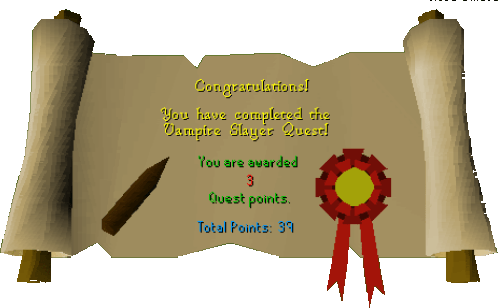

Vampire Slayer
Description: The people of Draynor village live in constant terror. Their numbers are dwindling, all due to the foul creature lurking in the manor to the north known as a vampire.Difficulty: Novice
Length: Medium
Items & Skills Needed:
- Decent armor and weapon to defeat a combat level 34 vampire
Reward: 3 Quest points, 4,825 Attack XP <
Instructions:
Find Morgan in Draynor; he has the quest symbol above his house. He'll tell you about the vampire and ask you to kill it. He'll also tell you to go find his friend, Dr. Harlow, at the Jolly Boar Inn.
Go upstairs in his house and search the west wall cupboard for a clove of garlic.
Head to Varrock and go to the Jolly Boar Inn, which is northeast outside the city walls.
Talk to Dr. Harlow and get him the beer that he asks for. He'll tell you how to defeat the vampire. He then hands you a stake to hammer it through the vampire's undead heart.
When you are ready, make sure you have the garlic, stake, and hammer in inventory, and go to Draynor Manor. Head to the stairs that go down on the east side of the manor.
Open the coffin, and the Count should jump out and start attacking you.
Attack him until he has a full red bar, and then use the stake on him to stab him through the heart. If not, make sure you have a hammer and the stake with you.
Once he's dead, you have finished the quest. (Congratulations!)
Congratulations, Quest Complete!

This quest guide was written on RuneHQ by Gnat88. Thanks to Weezy, stormer, Fran 2004 for corrections.
This quest guide was entered into the database on Sat, Feb 28, 2004, at 06:37:37 PM by Monkeychris and was last updated on Sun, Sep 21, 2025, at 06:42:25 PM by Halogod35.